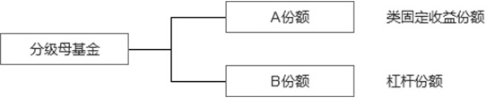

一、基金分类
1）根据基金单位是否可增加或赎回，可分为开放式基金和封闭式基金。
普通开放式基金一般不上市交易，可通过第三方销售机构、银行、券商等申购和赎回，基金份额规模不固定；封闭式基金有固定的存续期，存续期内基金份额规模固定，在通过证券交易场所上市交易，投资者可通过二级市场买卖。
2）根据组织形态的不同，可分为公司型基金和契约型基金。
基金通过发行基金股份成立投资基金公司的形式设立，通常称为公司型基金；
由基金管理人、基金托管人和投资人三方通过基金契约设立，通常称为契约型基金。
目前我国的证券投资基金均为契约型基金。
3）根据投资对象的不同，可分为股票型基金、混合型基金、债券型基金、货币市场基金等。
-股票基金: 60%以上的基金资产投资于股票的
-债券基金: 80% 以上的基金资产投资于债券的
-货币市场基金:仅投资于货币市场工具的，为货币市场基金；
-混合基金:投资于股票、债券和货币市场工具，并且股票投资和债券投资的比例不符合债券、股票基金规定的，为混合基金。
从投资风险角度看，几种基金给投资人带来的风险是不同的。其中股票基金风险最高，货币市场基金风险最小，债券基金的风险居中。
4）相同品种的投资基金由于投资风格和策略不同，风险也会有所区别。按风险程度又可分为：成长型、价值型、平衡型
成长型 – 成长型基金是指以追求资本增值为基本目标，较少考虑当期收入的基金，主要以具有良好增长潜力的股票为投资对象。
价值型 – 价值型基金是指以追求稳定的经常性收入为基本目标的基金，主要以大盘蓝筹股、公司债、政府债券等稳定收益证券为投资对象。
平衡型 – 平衡型基金则是既注重资本增值又注重当期收入的一类基金。一般而言，成长型基金的风险大、收益高；收入型基金的风险小、收益也较低；平衡型基金的风险、收益则介于成长型基金与收入型基金之间。
二、封闭式基金
根据基金单位是否可申购或赎回，基金可以分为封闭式基金和开放式基金两类。
封闭式基金是指基金份额在基金合同期限内固定不变，基金份额可以在依法设立的证券交易所交易，但基金份额持有人不得申请赎回的一种基金运作方式。封闭式基金有固定的存续期，期间基金规模固定，一般在证券交易场所上市交易，投资者通过二级市场买卖基金单位。
封闭式基金与开放式基金有以下区别：
（1）基金规模的可变性不同。封闭式基金均有明确的存续期限，在此期限内已发行的基金单位不能被赎回。虽然特殊情况下此类基金可进行扩募，但扩募应具备严格的法定条件。因此，在正常情况下，基金规模是固定不变的。而开放式基金所发行的基金单位是可赎回的，而且投资者在基金的存续期间内也可随意申购基金单位，导致基金的资金总额每日均不断地变化。换言之，它始终处于“开放”的状态。这是封闭式基金与开放式基金的根本差别。
（2）基金买卖方式不同。封闭式基金上市交易时，投资者在证券交易所按市价买卖，而开放式基金，投资者可随时向基金管理公司或销售机构申购或赎回。
（3）基金买卖价格形成方式不同。封闭式基金因为在交易所买卖，其价格主要由市场供求关系决定，价格不一定等于基金净值，当交易价格高于基金净值时，称为溢价交易，当交易价格低于基金净值时，称为折价交易。而开放式基金的买卖价格是以基金单位的资产净值为基础计算的，可直接反映基金单位资产净值的高低。
（4）基金管理人的投资策略不同。由于封闭式基金不能随时被赎回，其募集得到的资金可全部用于投资，这样基金管理公司可以制定长期的投资策略，取得长期经营绩效。而开放式基金则必须保留一部分现金，以便投资者随时赎回，不能尽数地用于长期投资。这两者在回报上没有特别的区别。
三、指数型基金
指数基金(Index Fund)，顾名思义就是以指数成份股为投资对象的基金。指数基金的投资采取拟合目标指数收益率的投资策略，分散投资于目标指数的成份股，力求股票组合的收益率拟合该目标指数所代表的资本市场的平均收益率。
目前市场上的指数基金按照基金管理人对其的主动管理程度，可分为两类，一类是完全复制型指数基金，这种指数基金力求按照基准指数的成分和权重进行配置，其目标是最大限度地减小与标的指数的跟踪误差。
另一类是增强型指数基金：在将大部分资产按照基准指数权重配置的基础上，也用一部分资产进行积极的投资。其目标为在紧密跟踪基准指数的同时获得高于基准指数的收益。
由于指数基金是一种被动投资，往往具有费用低廉的优点，而其投资目标是缩小与跟踪指数的跟踪误差，所以往往股票仓位较高，非常适合投资者进行资产配置。
投资者在选择指数基金时，首先要选择合适的标的指数，例如青睐大盘蓝筹股，可以选择沪深300指数，对应可以选择投资沪深300指数的指数基金，例如博时沪深300，若看好中小市值成长股，可选择中证500指数或中小300指数等。在确定好投资的指数后，则要选择跟踪误差最小的指数基金。
四、股票型基金
股票基金一般是指按照基金合同规定，60%以上的基金资产投资于股票的产品为股票型基金。股票型基金是最主要的基金品种，以股票作为投资对象，包括优先股票和普通股票。股票基金的主要功能是将大众投资者的小额资金集中起来，投资于不同的股票组合。股票基金可以按照股票种类的不同分为优先股基金和普通股基金。优先股基金是一种可以获得稳定收益、风险较小的股票基金，其投资对象以各公司发行的优先股为主，收益主要来自于股利收入。而普通股基金以追求资本利得和长期资本增值为投资目标，风险要较优先股基金高。
五、债券型基金
债券基金一般是指按照基金合同规定，80%以上的基金资产投资于债券的产品为债券型基金。债券型基金是一种以债券为投资对象的证券投资基金，其规模稍小于股票基金。由于债券是一种收益稳定、风险较小的有价证券，因此，债券基金适合于想获得稳定收入的投资者。债券基金基本上属于收益型投资基金，一般会定期派息，具有低风险且收益稳定的特点。
总体来讲，债券基金风险要比股票基金低，但是收益也相对低。
六、货币型基金
货币市场基金是指投资于货币市场上短期有价证券的一种基金。该基金资产主要投资于短期货币工具如国库券、商业票据、银行定期存单、政府短期债券、企业债券等短期有价证券。
1)货币市场基金特点
1、货币市场基金与其它投资于股票的基金最主要的不同在于基金单位的资产净值是固定不变的，通常是每个基金单位1元。投资该基金后，投资者可利用收益再投资，投资收益就不断累积，增加投资者所拥有的基金份额。比如某投资者以100元投资于某货币市场基金，可拥有100个基金单位，l年后，若投资报酬是8%，那么该投资者就多8个基金单位，总共108个基金单位，价值108元。
2、衡量货币市场基金表现好坏的标准是收益率，这与其它基金以净资产价值增值获利不同。
3、流动性好、资本安全性高。这些特点主要源于货币市场是一个低风险、流动性高的市场。同时，投资者可以不受到期日限制，随时可根据需要转让基金单位。
4、风险性低。货币市场工具的到期日通常很短，货币市场基金投资组合的平均期限一般为4~6个月，因此风险较低，其价格通常只受市场利率的影响。
5、投资成本低。货币市场基金通常不收取赎回费用，并且其管理费用也较低，货币市场基金的年管理费用大约为基金资产净值的0.25%~1%，比传统的基金年管理费率1%~2.5%低。
6、货币市场基金均为开放式基金。货币市场基金通常被视为无风险或低风险投资工具，适合资本短期投资生息以备不时之需，特别是在利率高、通货膨胀率高、证券流动性下降，可信度降低时，可使本金免遭损失。
2)货币基金投资风险
货币市场基金并不承诺本金任何时候都不发生亏损，也不保证最低收益率。一般来讲，在同时满足下列两个条件时，货币市场基金可能会发生本金亏损：一是短期内市场收益率大幅上升，导致券种价格大幅下跌；二是货币基金同时发生大额赎回，不能将价格下跌的券种持有到期，抛售券种后造成了实际亏损。据有关测算表明，单日货币市场基金发生本金亏损的可能性很小(0.06117%)，如持有一周或者一月，则本金损失的概率接近于0。随着持有期的延长，由于市场风险所导致的亏损概率会降到非常低。而国内货币基金按规定不得投资股票、可转换债券、AAA级以下的企业债等品种，因此发生信用风险的概率更低。
3)货币基金A和B的区别
货币基金A和B其实是同一支基金，只是在最低申购份额上和销售服务费上有所差异。货币基金A的最低申购份额一般都是1000份(1000元)，货币基金B的最低申购份额一般都是500万份(500万元)。货币基金A的销售服务费要略高于货币基金B，所以货币基金B的分红要略高于货币基金A.
七、混合型基金
根据投资对象的不同，基金可分为股票型基金、债券型基金、混合型基金和货币市场基金等。
根据中国证监会对基金类别的分类标准，60%以上的基金资产投资于股票的为股票基金；80%以上的基金资产投资于债券的为债券基金；仅投资于货币市场工具的为货币市场基金；投资于股票、债券和货币市场工具，但股票投资和债券投资的比例不符合股票基金、债券基金规定的就是混合型基金。
混合型基金根据资产投资比例及其投资策略的不同，可进一步分为偏股型基金（股票配置比例50%-70%，债券比例在20%-40%）、偏债型基金（与偏股型基金正好相反）、平衡型基金（股票、债券比例比较平均，大致在40%-60%左右）和配置型基金（股债比例按市场状况进行调整）等。一般而言，偏股型基金的风险较高，但预期收益率也较高；偏债型基金的风险较低，预期收益率也较低；股债平衡型基金的风险与收益则较为适中。
八、理财型基金
理财型基金是一种有一定封闭期的定期开放式纯债基金，最低投资额度为1000元，具有投资门槛低、期限短、收益稳、风险小的特点。运作周期包括7天、14天、30天、60天、90天和180天等，运作期限在90天以上的品种预期收益有望超越货币型基金。
短期理财基金有以下几个特点：
1、低门槛
短期理财基金则是1000元就可以购买。这一点是吸引小金额的普通投资者的一个较为重要的因素。
2、零费用
短期理财基金是没有认申购和赎回手续费用的。
3、随时买
银行理财产品是一期一期的，买卖时间有限制，而短期理财基金的买卖有两种模式，一种是在任意一个交易日都可以购买；另一种类似银行理财产品，定期开放申购和赎回。目前市场上的短期理财基金绝大多数都以第一种模式为主，这种模式有利于形成稳定的资金流，对提升收益有所帮助。
4、定期放赎
短期理财基金都有一个运作期，在运作期没有到期之前是不能赎回的。只有到期之后，才能够赎回。短期理财基金的运作期限包括7天、14天、28天、30天、60天、90天等等。
5、风险低
短期理财基金对自身的投资品种和久期有严格的限制，不能投A股和可转债，只能投397天以内央票、短期融资券、协议存款等短期限、安全性高品种。所以其风险是非常低的，与货币基金相当。另外，与银行的理财产品相比，短期理财基金还有一个优势就是运作会比较透明，因为是基金管理的，因此每天都会公布基金的七日年化收益率等收益率数据。
6、日结转
一般短期理财基金采用的是和货币基金类似的摊余成本法来估值，所以其单位净值和货币基金类似，始终为1元，其收益每日计算，按期结转。
7、自动滚存
短期理财基金都有一个期限。与银行理财产品到期就赎回的方式比较，短期理财基金如果到期你不赎回，用户的本息会自动变成短期理财基金份额，滚动到下一期进行投资，所以不会有类似银行理财产品的收益空白期。另外短期理财基金主投货币市场，节假日也是有收益的。
九、分级基金
分级基金(Structured Fund)，又称“结构型基金”，是通过对基金收益分配的安排，将基金份额分成预期收益和风险不同的两类或多类份额的结构化证券投资基金，可以满足投资者的固定收益和资本增值需求。通常情况下，分级基金有母基金份额，和由母基金份额所分成的A类份额和B类份额。分级基金各个子基金的净值与份额占比的乘积之和等于母基金的净值，按比例拆分成A、B份额的母基金净值= A类子基净值×A份额占比%+B类子基净值×B份额占比%。

关于收益与风险，A类份额预期风险与收益较低，但优先享受收益分配权；B类份额通过借用A类份额的资金来放大收益，具备一定的杠杆特性。通常，B类份额每年向A类份额支付约定利息，对于支付利息后的总体投资盈亏归B类份额所有。
因此，A类份额为类固定收益份额，风险低、投资的安全性高，但收益较低。B类份额为积极收益类份额，可以获得扣除A份额收益之后的剩余收益，且收益由于杠杆特性的存在而相较母基净值的增长而被放大，且同时承担由于杠杆特性而被放大的市场下跌风险，具有高风险但预期收益率相对较高的特征。
分级基金母基金分为有份额和无份额两种，有份额的只能通过一级市场申购赎回，上市的A份额和B份额可以在二级市场上交易。具体购买和操作方式参见具体的分级基金品种。
十、LOF基金
上市开放式基金（LOF）是指通过深交所交易系统发行并上市交易的开放式基金。LOF基金一般场内报价时间为：9:25，10:30，11:30和14:00
上市开放式基金主要特点有以下四个：
（1）上市开放式基金本质上仍是开放式基金，基金份额总额不固定，基金份额可以在基金合同约定的时间和场所申购、赎回。
（2）上市开放式基金发售结合了银行等代销机构与深交所交易网络二者的销售优势。银行等代销机构网点仍沿用现行的营业柜台销售方式，深交所交易系统则采用通行的新股上网定价发行方式。
（3）上市开放式基金获准在深交所上市交易后，投资者既可以选择在银行等代销机构按当日收市的基金份额净值申购、赎回基金份额，也可以选择在深交所各会员证券营业部按撮合成交的价格买卖基金份额。基金的申购、赎回操作程序与普通开放式基金相同。上市开放式基金在深交所的交易方式和程序则与封闭式基金基本一致，买入申报数量为100份或其整数倍，申报价格最小变动单位为0.001元。上市开放式基金交易价格的形成方式和机制与A股一致。与封闭式基金不同的是，上市开放式基金自上市首日起就实行跌涨幅限制，跌涨幅比例为10％。
（4）投资者可以通过跨系统转托管实现在深交所交易系统买卖和在银行等代销机构申购、赎回基金份额两种交易方式的转换。
十一、ETF基金
交易所交易基金是指可以在交易所上市交易的基金，又称ETFs(Exchang Traded Funds)，其代表的是一揽子股票的投资组合，投资人通过购买基金，一次性完成一个投资组合(例如某个指数的所有成分股股票)的买卖。
交易所交易基金有两种交易方式：
1)一是投资人直接向基金公司申购和赎回。这有一定的数量限制，一般为5万个基金单位或者其整数倍；而且是一种以货代款的交易，即申购和赎回的时候，付出的或收回的不是现金而是一揽子股票组合。
2)二是在交易所挂牌上市交易，以现金方式进行。与通常的开放式基金不同的是，交易所交易基金在交易日全天交易过程中都可以进行买卖，就像买卖股票一样，还可以进行短线套利交易。
十二、对冲基金
对冲基金（Hedge Fund）是指由金融期货、金融期权等金融衍生工具与金融组织结合后，用高风险投机为手段而以盈利为目的的金融基金。
对冲基金起源于20世纪50年代的美国，直到上世纪80年代，随着金融自由化的发展，对冲基金才有了更广阔的投资机会，从此进入了快速发展的阶段。目前全球对冲基金的规模已超过1万亿美元。
早期的对冲基金主要是利用期货、期权等金融衍生产品以及对相关联的不同股票进行空买空卖、风险对冲的操作，在一定程度上规避和化解投资风险。在一个最基本的对冲操作中，基金管理者在购入一种股票后，同时购入这种股票的一定价位和时效的看跌期权（Put Option）。看跌期权的效用在于当股票价位跌破期权限定的价格时，卖方期权的持有者可将手中持有的股票以期权限定的价格卖出，从而使股票跌价的风险得到对冲。
随着对冲基金的发展，对冲基金的范畴也进一步扩大，根据对冲基金不同的投资目的，会使用不同的投资策略，常用的策略多达20多种，其手法主要可以分为以下五类：
1. 长短仓，即同时买入及沽空股票，可以是净长仓或净短仓；
2. 市场中性，即同时买入股价偏低及沽出股价偏高的股票；
3. 可换股套戥，即买入价格偏低的可换股债券，同时沽空正股，反之亦然；
4. 环球宏观，即由上至下分析各地经济金融体系，按政经事件及主要趋势买卖；
5. 管理期货，即持有各种衍生工具长短仓。
目前国内由于股指期货和融资融券业务的开展，也开始出现一些对冲基金，不过主要是私募产品，公募基金由于受投资范围的限制，目前暂时还没有公募对冲基金。